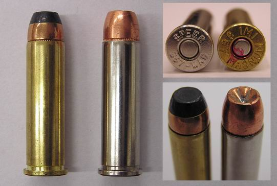
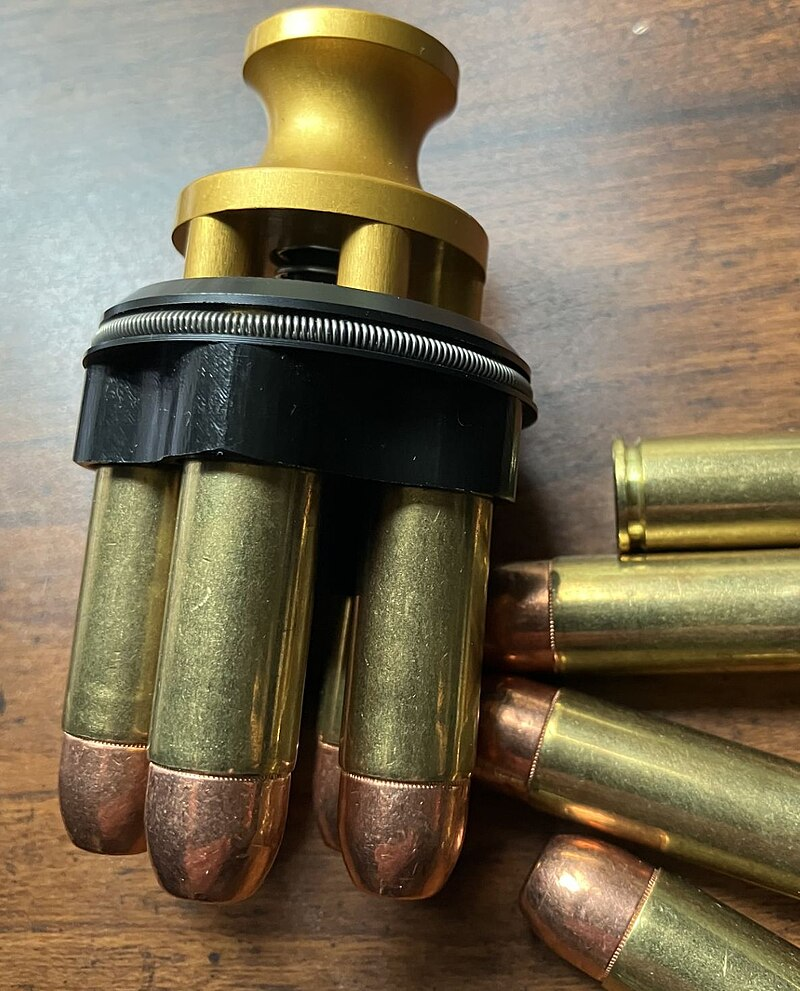
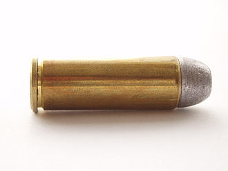
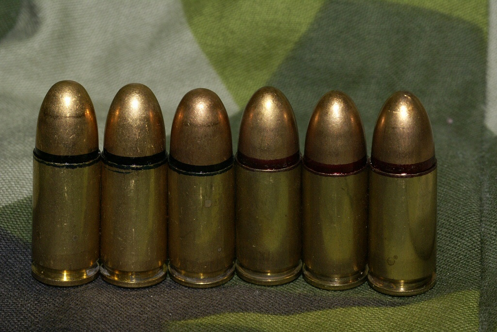
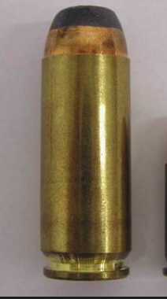
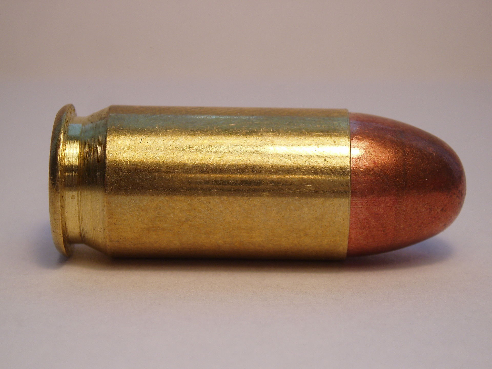
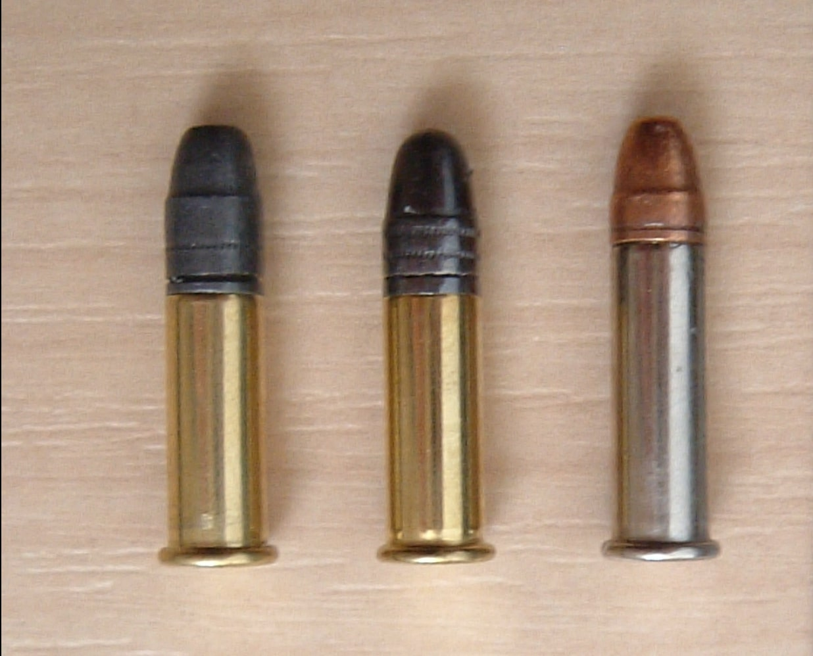

calibers

⋅Caliber refers to the diameter of the bullet or the internal diameter of the firearm's barrel.
⋅Common calibers include .22, .38, 9mm, .45 ACP, and .357 Magnum.
⋅The choice of caliber affects the firearm's performance, recoil, and intended use.
⋅Larger calibers generally offer more stopping power but may also result in increased recoil.
⋅Smaller calibers are often easier to handle and may be preferred for target shooting or training.

The .357 Magnum is a powerful revolver cartridge known for its high velocity and stopping power.
It is commonly used in revolvers and some lever-action rifles.
The .357 Magnum is effective for self-defense, hunting, and target shooting.
It offers a balance of manageable recoil and significant terminal ballistics.
The cartridge is often chambered in revolvers like the Colt King Cobra and Smith & Wesson Model 686.
The .357 Magnum is known for its versatility, capable of firing both full-power loads and lighter target loads.
It is a popular choice among law enforcement and civilian shooters for its effectiveness in various scenarios.

The .500 S&W Magnum is one of the most powerful handgun cartridges available.
It was designed for hunting large game and offers exceptional stopping power.
The cartridge is typically chambered in revolvers like the Smith & Wesson Model 500.
Due to its high recoil, it requires a strong grip and proper shooting technique.
The .500 S&W Magnum is often used for bear defense and hunting dangerous game.
It can fire heavy bullets at high velocities, making it effective at long ranges.
The cartridge is known for its distinctive muzzle blast and recoil, which can be challenging for some shooters.
Despite its power, it is not commonly used for self-defense due to its size and recoil.

The .45 Colt, also known as .45 Long Colt, is a classic revolver cartridge with a rich history.
It was originally designed for the Colt Single Action Army revolver in the late 19th century.
The .45 Colt is known for its large bullet diameter and moderate recoil.
It is often used for cowboy action shooting, hunting, and self-defense.
The cartridge can be loaded with various bullet weights and styles, making it versatile.

The 9mm, or 9x19mm Parabellum, is one of the most widely used handgun calibers in the world.
It is known for its balance of manageable recoil and effective stopping power.
The 9mm cartridge is commonly used in semi-automatic pistols and submachine guns.
It is favored by law enforcement, military, and civilian shooters for its versatility.
The 9mm can be loaded with various bullet types, including full metal jacket (FMJ) and hollow point (HP).
Its popularity is due to its wide availability, affordability, and effectiveness in self-defense scenarios.

The .50 Action Express (AE) is a powerful handgun cartridge designed for high-performance revolvers.
It was developed in the 1980s and is known for its large bullet diameter and high velocity.
The .50 AE is typically chambered in the Desert Eagle pistol, which is famous for its size and power.
This cartridge is often used for hunting large game and as a novelty in shooting sports.
The .50 AE offers significant stopping power, making it effective for self-defense against dangerous animals.
Due to its size and recoil, it requires a strong grip and proper shooting technique.

The .45 ACP (Automatic Colt Pistol) is a popular handgun cartridge known for its stopping power and reliability.
It was designed by John Browning in 1904 and is widely used in semi-automatic pistols.
The .45 ACP is characterized by its large bullet diameter and moderate recoil, making it effective for self-defense.
It is commonly chambered in firearms like the Colt 1911 and Glock 21.
The cartridge can be loaded with various bullet types, including full metal jacket (FMJ) and hollow point (HP).
The .45 ACP is favored by many law enforcement agencies and civilian shooters for its effectiveness in close-quarters situations.
Its popularity is due to its historical significance, reliability, and effectiveness in self-defense scenarios.

The .22 Long Rifle (.22LR) is one of the most popular and widely used rimfire cartridges.
It is known for its low recoil, affordability, and versatility in various shooting applications.
The .22LR is commonly used for target shooting, plinking, and small game hunting.
It is often chambered in rifles and pistols, making it accessible to shooters of all skill levels.
The cartridge is available in a wide range of bullet types, including lead round nose (LRN) and hollow point (HP).
The .22LR is an excellent choice for beginners due to its low cost and minimal recoil.
It is also used for training purposes, as it allows shooters to practice marksmanship without the expense of larger calibers.
The .22LR is a staple in the shooting community and is often recommended for new shooters to develop their skills.